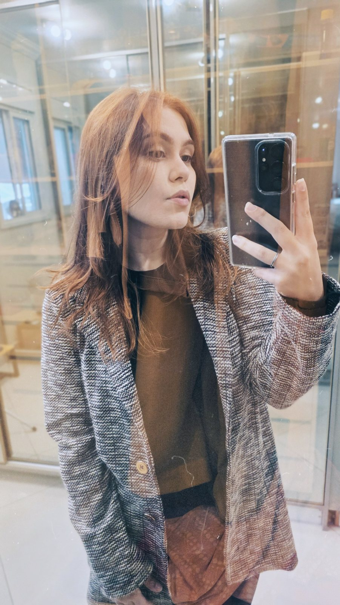
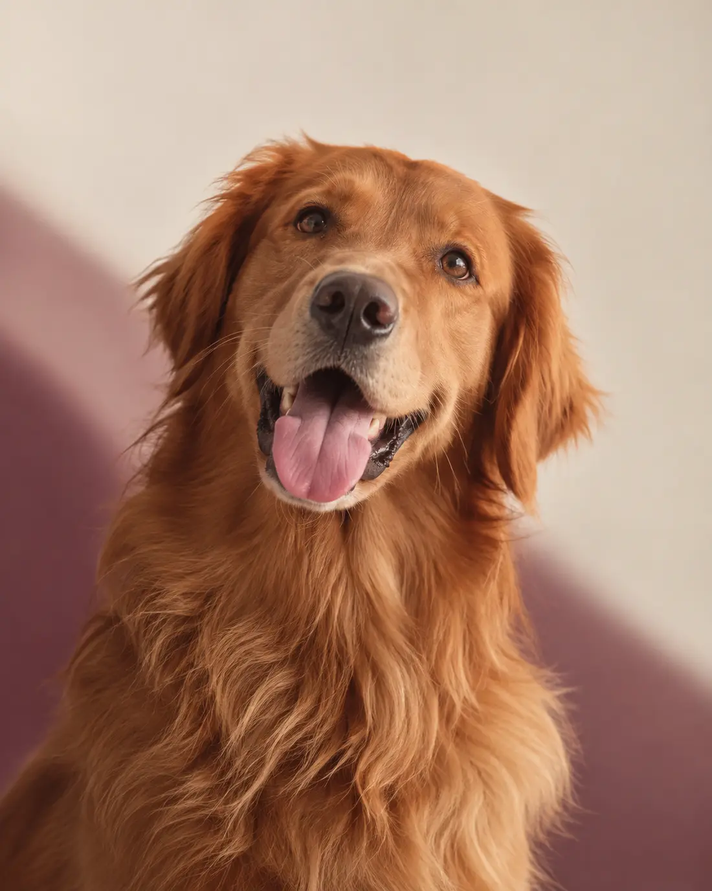
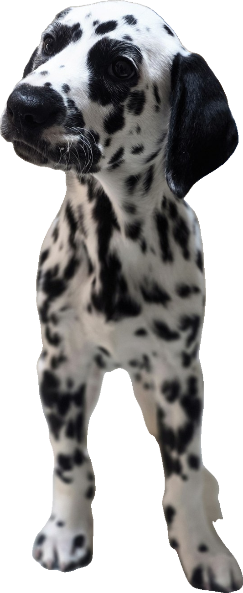
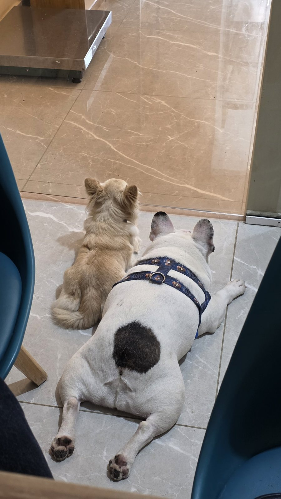

by barbara f tatsch
//@barbarafonsecavet
Se eu pudesse darsó um conselho
[pra todo tutor...]by barbara f tatsch
//@barbarafonsecavet

Leva ele no check‑up
mesmo com ele ótimo. Uma vez por ano, pelo menos.

by barbara f tatsch
//@barbarafonsecavet
Bicho esconde dormuito bem
Gato, então, é campeão nisso. Por fora, ele parece ótimo.
by barbara f tatsch
//@barbarafonsecavet
O exame enxerga antes.

O exame de sangue mostra o rim mudando antes de qualquer sinal.

by barbara f tatsch
//@barbarafonsecavet
Idoso vai mais vezes
Quanto mais velhinho, mais perto a gente acompanha.

by barbara f tatsch
//@barbarafonsecavet
Meu objetivo
é que você não precise de mim. E isso começa com ele bem 💗
by barbara f tatsch
//@barbarafonsecavet
E o seu, quando foi o último check-up? Me conta aqui embaixo 👇